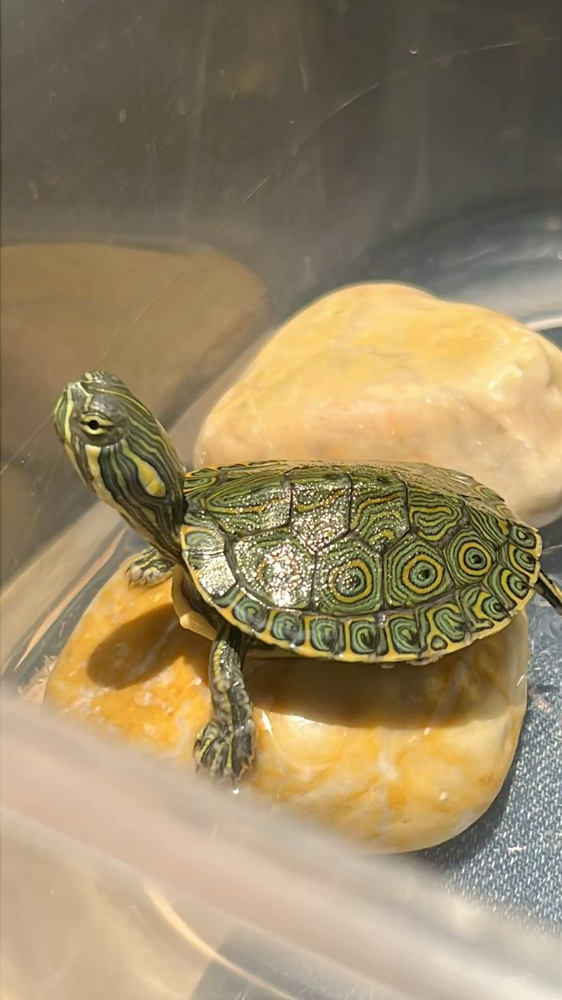

What are they?
Peacock turtles are semi-aquatic reptiles known for the colors and patterns on their shells. They mainly live in rivers, lagoons, and tropical areas of South America.
They need both a space with water for swimming and a dry area where they can rest and receive light.
